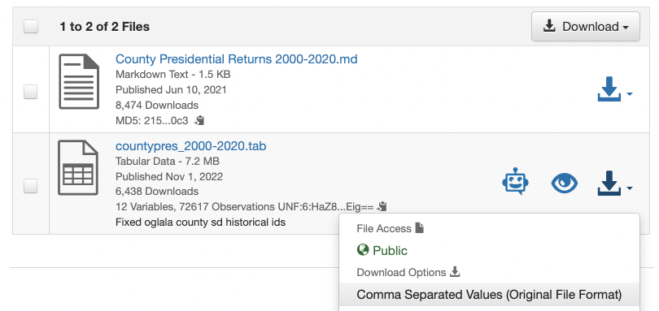
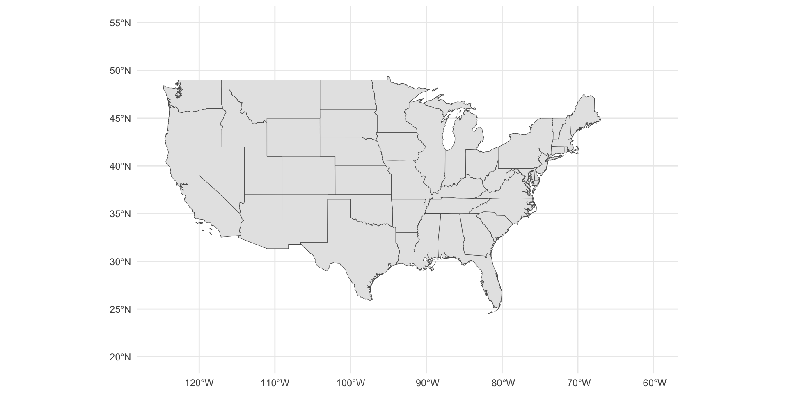
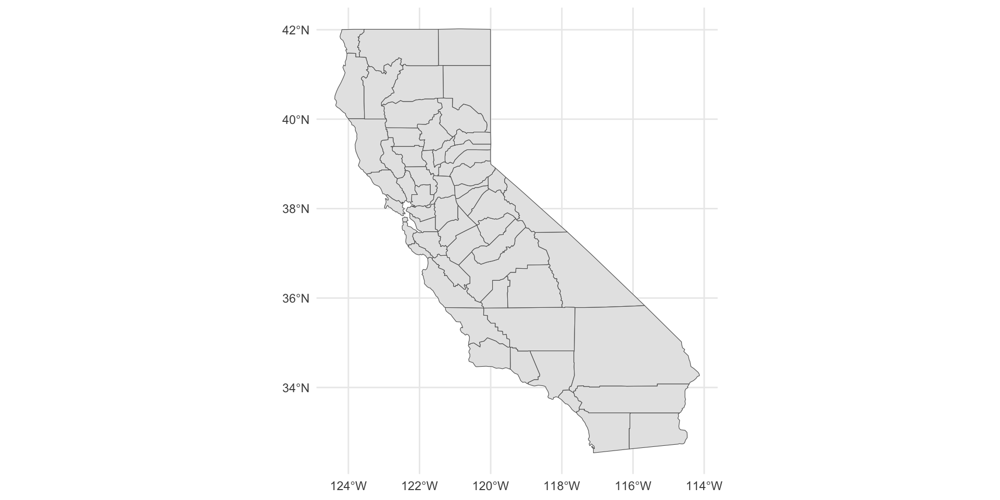
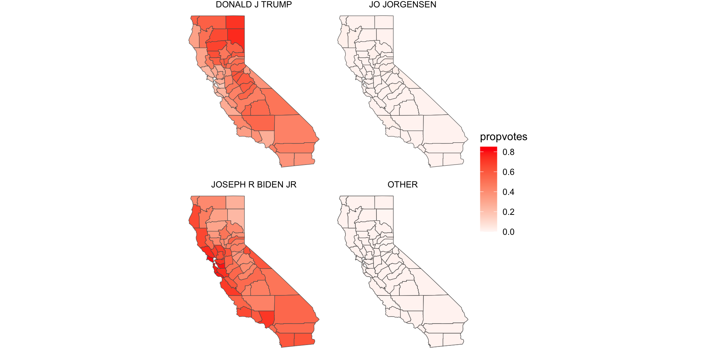
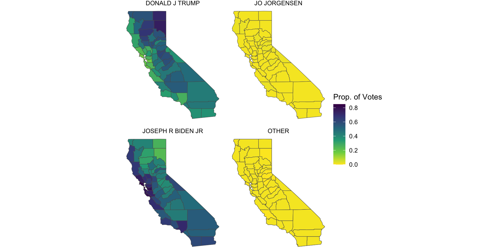
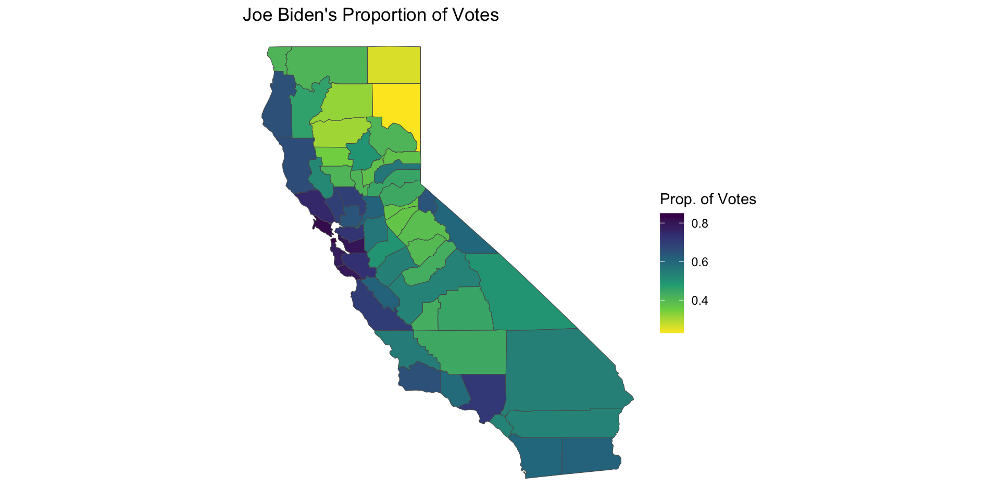

US Presidential Elections 2020
Mapping Elections Data I
Required Packages
The content in these slides depend on the following packages:
About
Visualizing US Presidential Elections (2020)
US Presidential Elections 2020
Data from MIT Election Lab
County Presidential Election (2000-2020)

https://dataverse.harvard.edu/dataset.xhtml?persistentId=doi:10.7910/DVN/VOQCHQ
Citation: Data Source
Data: County Presidential Election Returns 2000-2020
Source: MIT Election Data + Science Lab
https://dataverse.harvard.edu/dataset.xhtml?persistentId=doi:10.7910/DVN/VOQCHQ
MIT Election Data and Science Lab, 2018, “County Presidential Election Returns 2000-2020”, https://doi.org/10.7910/DVN/VOQCHQ, Harvard Dataverse, V11, UNF:6:HaZ8GWG8D2abLleXN3uEig== [fileUNF]
License: Public Domain CC0 1.0
Data Available in CSV format

US Presidential Election 2000-2020 Data
CSV file available in bCourses (see Files/data)
US Presidential Election 2000-2020 Data
# A tibble: 8 × 6
year state state_po county_name county_fips office
<int> <chr> <chr> <chr> <chr> <chr>
1 2000 alabama AL autauga 01001 US PRESIDENT
2 2000 alabama AL autauga 01001 US PRESIDENT
3 2000 alabama AL autauga 01001 US PRESIDENT
4 2000 alabama AL autauga 01001 US PRESIDENT
5 2000 alabama AL baldwin 01003 US PRESIDENT
6 2000 alabama AL baldwin 01003 US PRESIDENT
7 2000 alabama AL baldwin 01003 US PRESIDENT
8 2000 alabama AL baldwin 01003 US PRESIDENTUS Presidential Election 2000-2020 Data (cont’d)
# A tibble: 10 × 6
candidate party candidatevotes totalvotes version mode
<chr> <chr> <dbl> <dbl> <dbl> <chr>
1 AL GORE DEMOCRAT 4942 17208 20220315 TOTAL
2 GEORGE W. BUSH REPUBLICAN 11993 17208 20220315 TOTAL
3 RALPH NADER GREEN 160 17208 20220315 TOTAL
4 OTHER OTHER 113 17208 20220315 TOTAL
5 AL GORE DEMOCRAT 13997 56480 20220315 TOTAL
6 GEORGE W. BUSH REPUBLICAN 40872 56480 20220315 TOTAL
7 RALPH NADER GREEN 1033 56480 20220315 TOTAL
8 OTHER OTHER 578 56480 20220315 TOTAL
9 AL GORE DEMOCRAT 5188 10395 20220315 TOTAL
10 GEORGE W. BUSH REPUBLICAN 5096 10395 20220315 TOTAL2020 Presidential Election
Let’s focus on the 2020 Presidential Election
2020 Presidential Election, California Results
dat2020 |>
filter(state == "california") |>
select(county_name, candidate:totalvotes) |>
slice_head(n = 5)# A tibble: 5 × 5
county_name candidate party candidatevotes totalvotes
<chr> <chr> <chr> <dbl> <dbl>
1 alameda JOSEPH R BIDEN JR DEMOCRAT 617659 770070
2 alameda OTHER GREEN 4664 770070
3 alameda JO JORGENSEN LIBERTARIAN 6295 770070
4 alameda OTHER OTHER 5143 770070
5 alameda DONALD J TRUMP REPUBLICAN 136309 770070Expressing votes relative to total in county
Let’s add a column propvotes to get the proportion of votes that each candidate obtained in every county:
propvotes = candidatevotes / totalvotes
Analysis of California
Number of votes that each candidate received in each of the counties in California
# A tibble: 232 × 3
# Groups: county_name [58]
county_name candidate sum_votes
<chr> <chr> <dbl>
1 alameda DONALD J TRUMP 136309
2 alameda JO JORGENSEN 6295
3 alameda JOSEPH R BIDEN JR 617659
4 alameda OTHER 9807
5 alpine DONALD J TRUMP 244
6 alpine JO JORGENSEN 15
7 alpine JOSEPH R BIDEN JR 476
8 alpine OTHER 6
9 amador DONALD J TRUMP 13585
10 amador JO JORGENSEN 349
# ℹ 222 more rowsMaps
Map of US (contiguous states)
We’ve seen how to plot a map of US
Map of US (contiguous states)
Map of US Counties
"rnaturalearth" does not come with a built-in map data of US Counties. But we can use the "county" map-data from the package "maps".
To be consistent with the way we handle vector data, we convert the "county" map object into an "sf" object with st_as_sf().
Map of US Counties
Map of California Counties
Map Data of California Counties
We have map-data of US states:
us_states_sfWe have map-data of US counties:
us_counties_sfIt would be nice to have map-data of California Counties.
How do get map-data of California Counties? This requires a bit of string matching via str_detect():
Map of California Counties
With filtered counties of California cal_counties_sf, we can make a map:
Map of California Counties
What’s in cal_counties_sf?
Simple feature collection with 10 features and 1 field
Geometry type: MULTIPOLYGON
Dimension: XY
Bounding box: xmin: -124.2344 ymin: 35.90154 xmax: -118.3502 ymax: 42.00927
Geodetic CRS: +proj=longlat +ellps=clrk66 +no_defs +type=crs
ID geom
1 california,alameda MULTIPOLYGON (((-121.4785 3...
2 california,alpine MULTIPOLYGON (((-120.0748 3...
3 california,amador MULTIPOLYGON (((-120.0748 3...
4 california,butte MULTIPOLYGON (((-121.6217 3...
5 california,calaveras MULTIPOLYGON (((-120.069 38...
6 california,colusa MULTIPOLYGON (((-121.8223 3...
7 california,contra costa MULTIPOLYGON (((-121.5702 3...
8 california,del norte MULTIPOLYGON (((-123.6844 4...
9 california,el dorado MULTIPOLYGON (((-121.1519 3...
10 california,fresno MULTIPOLYGON (((-120.6821 3...Adding Column of County Name
For sake of convenience, we need to add a column county to the map-data cal_counties_sf (so that we have the name of the county)
cal_counties_sf = cal_counties_sf |>
mutate(county = str_remove(ID, "california,"))
head(cal_counties_sf$county)[1] "alameda" "alpine" "amador" "butte" "calaveras" "colusa" What relevant data do we have so far?
2020 votes-data from California:
votes_californiaMap-data of California counties:
cal_counties_sf
We need to join these data sets in order to combine the votes information with the map-data.
Joining map-data with elections-data
Join California map-data with votes-data, via inner_join()
Joining map-data with elections-data
Simple feature collection with 8 features and 5 fields
Geometry type: MULTIPOLYGON
Dimension: XY
Bounding box: xmin: -122.2749 ymin: 37.45998 xmax: -119.5362 ymax: 38.90956
Geodetic CRS: +proj=longlat +ellps=clrk66 +no_defs +type=crs
ID county candidate propvotes candidatevotes
1 california,alameda alameda JOSEPH R BIDEN JR 0.80 617659
2 california,alameda alameda OTHER 0.01 4664
3 california,alameda alameda JO JORGENSEN 0.01 6295
4 california,alameda alameda OTHER 0.01 5143
5 california,alameda alameda DONALD J TRUMP 0.18 136309
6 california,alpine alpine JOSEPH R BIDEN JR 0.64 476
7 california,alpine alpine OTHER 0.01 4
8 california,alpine alpine JO JORGENSEN 0.02 15
geom
1 MULTIPOLYGON (((-121.4785 3...
2 MULTIPOLYGON (((-121.4785 3...
3 MULTIPOLYGON (((-121.4785 3...
4 MULTIPOLYGON (((-121.4785 3...
5 MULTIPOLYGON (((-121.4785 3...
6 MULTIPOLYGON (((-120.0748 3...
7 MULTIPOLYGON (((-120.0748 3...
8 MULTIPOLYGON (((-120.0748 3...Mapping Votes (facet by candidate)
Looking for an alternative color scheme
We can use a Viridis Color palette.
https://ggplot2.tidyverse.org/reference/scale_viridis.html
The function scale_fill_viridis_c() allows us to choose a continuous scale.
Its argument direction = -1 gives a reversing order (from yellow to dark blue).
Mapping Votes (5th attempt)
Map of Joe Biden’s votes
Joe Biden’s votes: top-5 counties
votes_california |>
filter(candidate == "JOSEPH R BIDEN JR") |>
arrange(desc(propvotes)) |>
slice_head(n = 5)# A tibble: 5 × 4
county_name candidate propvotes candidatevotes
<chr> <chr> <dbl> <dbl>
1 san francisco JOSEPH R BIDEN JR 0.85 378156
2 marin JOSEPH R BIDEN JR 0.82 128288
3 alameda JOSEPH R BIDEN JR 0.8 617659
4 santa cruz JOSEPH R BIDEN JR 0.79 114246
5 san mateo JOSEPH R BIDEN JR 0.78 291496Joe Biden’s votes: bottom-5 counties
votes_california |>
filter(candidate == "JOSEPH R BIDEN JR") |>
arrange(propvotes) |>
slice_head(n = 5)# A tibble: 5 × 4
county_name candidate propvotes candidatevotes
<chr> <chr> <dbl> <dbl>
1 lassen JOSEPH R BIDEN JR 0.23 2799
2 modoc JOSEPH R BIDEN JR 0.26 1150
3 tehama JOSEPH R BIDEN JR 0.31 8911
4 shasta JOSEPH R BIDEN JR 0.32 30000
5 glenn JOSEPH R BIDEN JR 0.35 3995Map with ggplotly()
View code
joe_biden = cal_votes_map |>
filter(candidate == "JOSEPH R BIDEN JR")
joe_biden_map = ggplot(data = joe_biden, aes(label = county)) +
geom_sf(aes(fill = propvotes)) +
scale_fill_viridis_c(name = "Prop. of Votes", direction = -1) +
theme_void() +
labs(title = "Joe Biden's Proportion of Votes")
ggplotly(joe_biden_map)